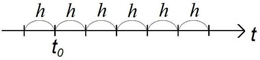
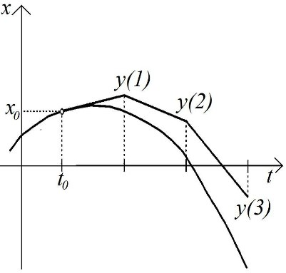

\(\textbf{Разностные уравнения}\) - это уравнения относительно неизвестной последовательности.
Разностные уравнения часто используются
\(\bullet\) В моделях экономической динамики с дискретным временем
\(\bullet\) Для приближенного решения ДУ
Разностные уравнения возникают, например, в процессе приближенного решения ОДУ \[\begin{equation}\label{1} \dot{x}=f(t,x), \tag{1} \end{equation}\] аналитическое решение которого недоступно.
По определению производной \[\dot{x}(t) = \lim_{h\rightarrow 0}\frac{x(t+h) - x(t)}{h}.\]
Следовательно, приближенно \[\dot{x}(t) \approx \frac{x(t+h) - x(t)}{h}\] с маленькой ошибкой при малых \(h.\)
Поэтому дифференциальное уравнение можно приблизить уравнением \[\begin{equation}\label{2} x(t+h) = x(t) + hf(t, x(t)). \tag{2} \end{equation}\]
Практическое применение уравнения (\ref{2}) \(x(t+h) = x(t) + hf(t, x(t))\): на оси времени выделяется последовательность точек, называемая \(\textbf{сеткой}\)

\(h>0\) - фиксированный \(\textbf {шаг сетки},\)
\(t_0\) - заданный начальный момент времени,
рассматривают лишь дискретные значения времени - \(\textbf {узлы сетки}\) \[t_k = t_0 + k*h,\;где\;k \in N\]
Пусть \(y(k) (k \in N)\) - искомая функция, определенная на множестве узлов сетки. Рассмотрим относительно функции \(y\) уравнение \[\begin{equation} \label {3} y(k+1) = y(k) + hf(t_0 + kh, y(k)). \tag{3} \end{equation}\]
Это пример разностного уравнения \(\textbf{первого порядка}\)
Приближенный метод решения ОДУ при помощи разностного уравнения (\ref{3}) называется \(\textbf {методом Эйлера.}\)
Если задано начальное значение \(x(t_0) = y(0)\), то из уравнения (\ref{3}) последовательно определим значения \[y(1), y(2), y(3), y(4), ...\] приближенно равные значениям \[x(t_0 + h), x(t_0 + 2h), x(t_0 + 3h), x(t_0 + 4h), ...\] решения задачи Коши для ДУ (\ref{1}) в узлах сетки.
\(\textbf{Геометрическая интерпретация}\)

Многие процессы в экономике изменяют свое состояние не непрерывно, а дискретно:
\(\bullet\) официальный курс доллара устанавливается один раз в день;
\(\bullet\) стоимость многих ценных бумаг, величина банковский вкладов рассчитывается с точностью до одного дня;
\(\bullet\)зарплата, проценты по вкладам выплачиваются один раз в месяц;
\(\bullet\)статистические данные о состоянии предприятия, отрасли, государства подготавливаются ежемесячно, ежеквартально, ежегодно.
Такие данные невозможно получать непрерывно.